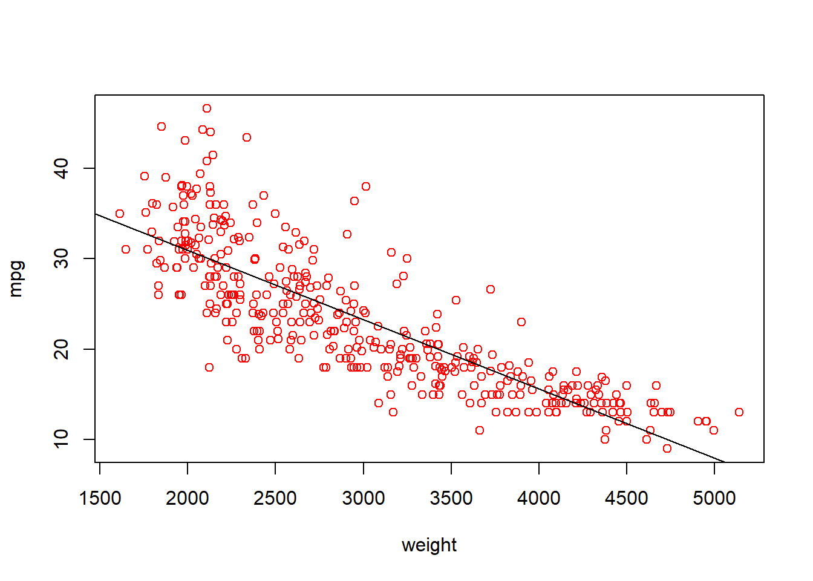

Chapter 5 Functions
Functions are the building blocks in R. There are two ways to pass arguments to a function: by argument names and by position. You will learn to call function through these two ways. In addition, you also will
- Learn to examine the help document of each function by using ?function_name.
- Understand the default value of arguments.
- Open the black box of functions by learning to write your own functions.
- Understand the scoping rule of R.
5.1 Get the Help Document of A Function
You cannot memorize all functions and their usage. We rely on the help documents of the function.
Take seq() function as an example. This function can generate a sequence of number. We can type ?seq to get the help document of the function
5.2 Call build-in functions in R
The help document of seq() shows the augments of the function is: seq(from = 1, to = 1, by , length , …)
Here “from”, “to”, “by”, “length” are the argument of the functions. Once we pass value to these arguments, the function will then process these arguments according to its code inside the function.
E.g., we want to generate a sequence of even number from 2 to 12.
- by argument name.
## [1] 2 4 6 8 10 12- by position
## [1] 2 4 6 8 10 125.3 Write Your Own Functions
The general format for defining function is as follow:
E.g., our first task is to write a function to calculate the sum square of two numbers.
By default, the result from the last line of the function will be the returned result. So we can change the last line as: \(x_1^2+x_2^2\).
Once we define the function, it is ready to be used just as other functions built-in R.
- call function by argument name
## [1] 5- call function by position
## [1] 55.4 Flexible Function
You may notice that some functions have an argument of “…”. This is called flexible function. Let’s take a look at an example:
We will define a plot function to make a scatter plot between two variable, and add a linear fitted linear to the plot.
abplot=function(x,y,...){
plot(x,y,... ) # create a scatter plot
abline(lm(y~x)) # add a fitted line
}Essentially, anything you passed in the position of … will be passed to the plot() function.
We can now call abplot() function with additional arguments as below:
Auto=read.csv("data/Auto.csv")
abplot(Auto$weight, Auto$mpg, type="p", xlab="weight",
ylab="mpg",col="red")
5.5 Excercise 1
Write a function to calculate the descriptive statistics of an array of numbers (i.e., mean, standard deviation and skewness). Skewness is a measure of symmetry, or more precisely, the lack of symmetry. Below is the formula for computing skewness of a variable.
\[skewness =\frac{\sum_{i=1}^n(x_i − \bar x)^3}{n*\sigma^3}\]
A variable with skewness close to 0 tend to be symmetry; A variable with negative skewness tend to left skewed; A variable with positive skewness tend to right.
mystat=function(x){
avg=mean(x)
sd=sd(x)
skewness=mean((x-avg)^3)/sd^3
return(c(avg, sd, skewness)) # return mean and std dev as a vector
}
# acceleration is not as skewed
mystat(Auto$acceleration)## [1] 15.5413265 2.7588641 0.2893592## [1] 104.469388 38.491160 1.0790195.6 The apply() function family
The apply() function family is very useful for data analysis. The function looks like below:
apply(X, MARGIN, FUN, …), where X is 2-dimensional data array, e.g., matrix or a data.frame; MARGIN is a variable defining how the function is applied:
- when MARGIN=1, it applies over rows,
- whereas with MARGIN=2, it works over columns
FUN, which is the function that you want to apply to the data.
In addition, lapply() and sapply() are the two variants of apply(). lapply() and sapply() both work over column and return results in different format.
# apply function on the column and return results as list
lapply(Auto[c("mpg","weight","horsepower")], mystat)## $mpg
## [1] 23.4459184 7.8050075 0.4536001
##
## $weight
## [1] 2977.584184 849.402560 0.515616
##
## $horsepower
## [1] 104.469388 38.491160 1.079019# apply function on column and return a simplified results
sapply(Auto[c("mpg","weight","horsepower")], mystat)## mpg weight horsepower
## [1,] 23.4459184 2977.584184 104.469388
## [2,] 7.8050075 849.402560 38.491160
## [3,] 0.4536001 0.515616 1.0790195.7 Scoping Rule in R
Scoping Rule determines where R should search the value of free variable inside a function. Free variables inside a function is the variables that is neither defined in a function nor the functions’ argument.
Let’s look at an example.
## [1] 25In the above code, “power” is a free variable. A good practice is to avoid free variables. In other word, we should define variables needed by a function either through arguments or define locally within the function. For example, we can revise the above function as below:
power=2
myfun2=function(x){
power=3 # define power inside the function
x^power
}
# guess, what is the value of myfun2(2)
myfun2(2) ## [1] 8## [1] 2The scoping rule in R determines that what is the value of “power” when we call myfun2(2). In R, the program will first search inside the function whether “power” is defined. If yes, then use the value defined inside the function. Otherwise, the program examine whether “power” is defined outside the function. Changing the value inside the function will not change the variable outside the function.
5.8 Excercise
Support you are working at a bank provides mortgage loan. One important task is to calculate the monthly mortgage payment for any given loan. You can use the following equation to calculate the monthly mortgage payment: \[M = P ( i(1 + i)^n ) / ( (1 + i)^n - 1)\] where
- P = principal loan amount
- i = annual_interest_rate/12, i.e., i is the monthly interest rate, which is the annual interest rate divided by 12
- n = number of months required to repay the loan
In this exercise, your goal is define a function for calculating monthly mortgage payment. The function takes three arguments: P(principal), annual_rate, year_repay. The default year_repay is 30, which is the most common mortgage term.